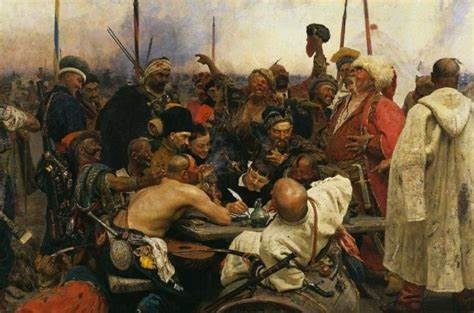

"Запорозьке козацтво - гордість української нації".
 Кому насправдi писали листа козаки?Однією з найяскравіших сторінок літопису боротьби українського народу за свою незалежність був козацький рух. Козаки стали тією силою, яка впродовж століть пильно стояла на сторожі свободи і гідностi України як незалежної, суверенної держави.
"У нас над усе честь і слава, військова справа,
щоб і себе на сміх не дати, і ворогів під ноги
топтати"
Запорозький козак це насамперед:
- воїн
- лицар
Козаки виглядали так:
- середнього зросту
- міцної статури
-
у війні невтомні
- відважнi
- хоробрі
Слава запорозького війська була така велика, що багато істориків порівнювали козаків з найсильнішими і наймужнішими народами світу. Бернар Коннф у своїй "Історії Польщі в особистих листах до знатних осіб" підкреслює витривалість, хоробрість й військову винахідливість козаків, порівнюючи їх з іспанськими магілетами або ж із шотландськими горцями.
Дiзнатися бiльше про козакiв